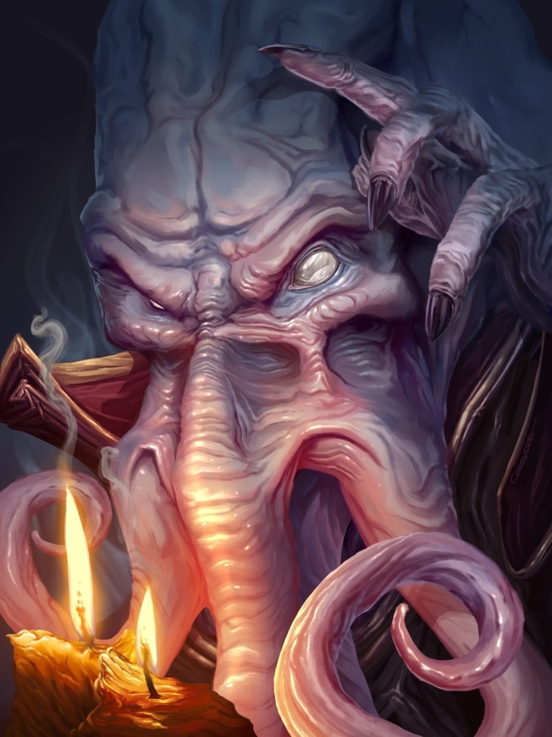

A mind is a terrible thing to waste.
You've decided not to trust strangers that you find fiddling strange sacks far below the surface.
The side tunnel that you've chosen is brightly lit (relativly speaking) by some glowing mushrooms.
The rough natural stone and bioluminesent fungus slowly give way to a smooth purplish rock that is oddly spongey when you step on it.
The tunnel is still well lit despite there being no obvious source of light.
Travelling further still it's hard to tell but you think you are heading up.
You come to a fork in the cave.
To the right, another bog-standard tunnel but there is perhaps the faintest hint of a breeze.
Center is an ornate archway carved to look like... slimey tentacles?
and to the left is... !?! A Dwarf?
So busy were you with your inner-monolog that you completely overlooked the short and stout little man struggling to free himself from a trap.
"Aye'o buddy, mind giving me a hand here?"
Before you can respond a chilling presence makes your hair stand on end, and something primal in your brain is screaming, "RUN!"
Sliding down the center corridor is a thing in the shape of a man but it's head is a squid. (Trust me it's real scary!)
You have only seconds to act!
Do you:
Run left! The dwarf has already triggered the trap there and squidface will probably stop to deal with him first anyway.
Help the dwarf! Upon closer inspection he looks pretty tough, together the two of you can beat this thing!
Run right! The path of least resistance, no squid, no dwarf.